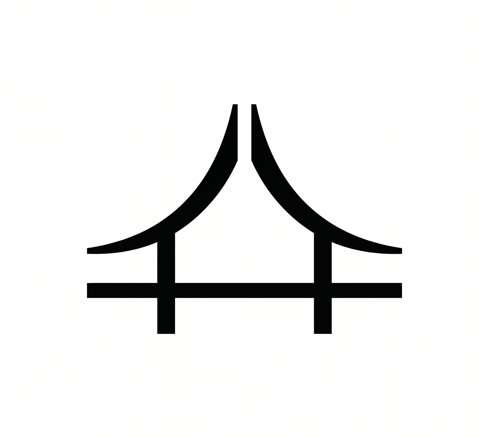

WKY — WEI-YUAN (KEN) / 謙山敘事
謙山敘事 · Mountain Narrative
以鏡頭觀察世界，以雙手建造空間，以文字記錄思想。探索個人創作與建築教育的跨界可能。
創作者WeI-Yuan (Ken)
領域建築 · 設計 · 教育
地點台中
我相信好的設計源於對生活的深刻觀察。每一個建築構圖、每一篇文章、每一件作品，都是對「居住」這個根本問題的回應。當我們學會用心感受空間，光線會告訴你設計的答案。
Less is More. 去除一切不必要的裝飾，讓空間和文字回歸本質。
尊重場所精神，讓設計回應當地文化與氣候，而非追求全球化的一致性。
每一個選擇都影響未來。設計應當節能、健康、與環境和諧共存。
知識需要流動。透過教育，將設計的智慧分享給下一個世代。